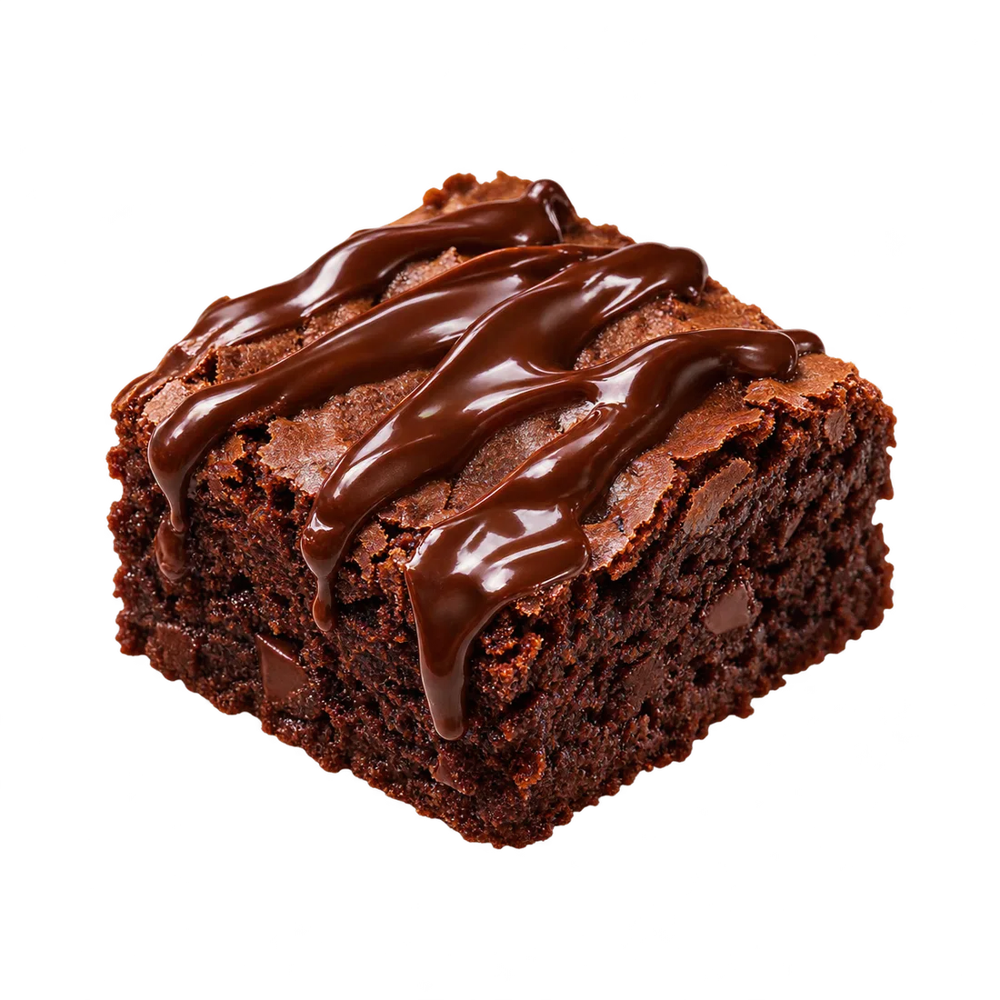
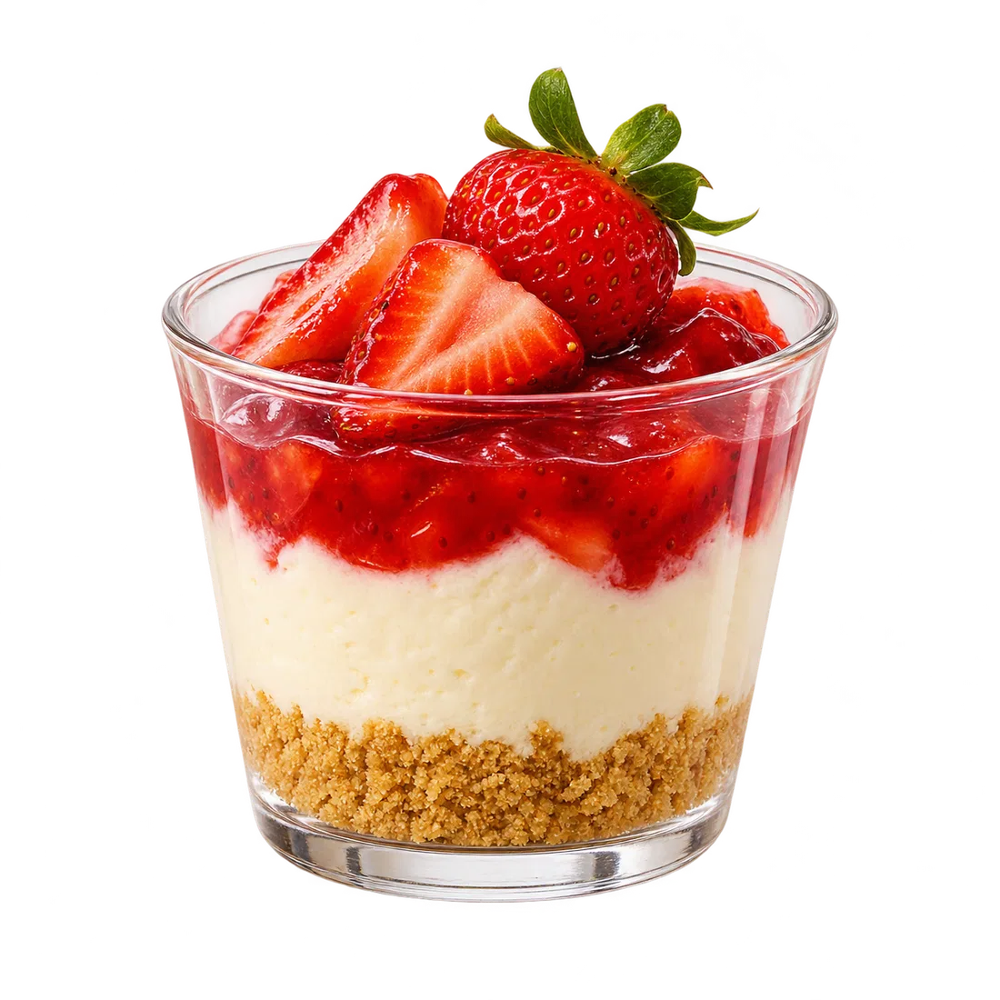
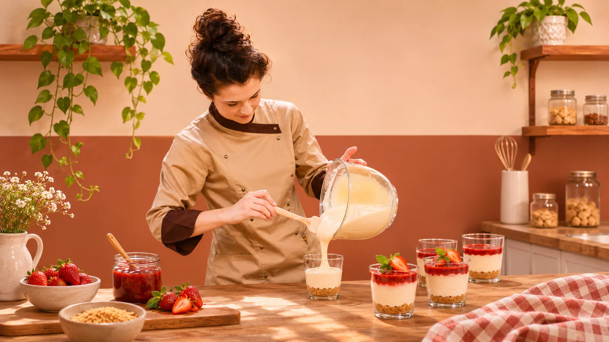
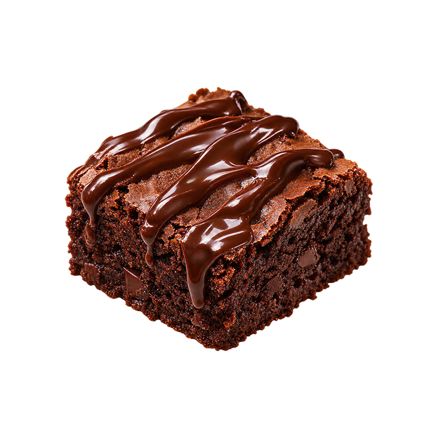
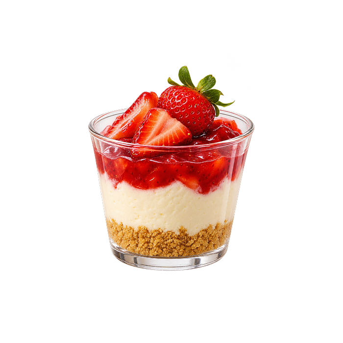
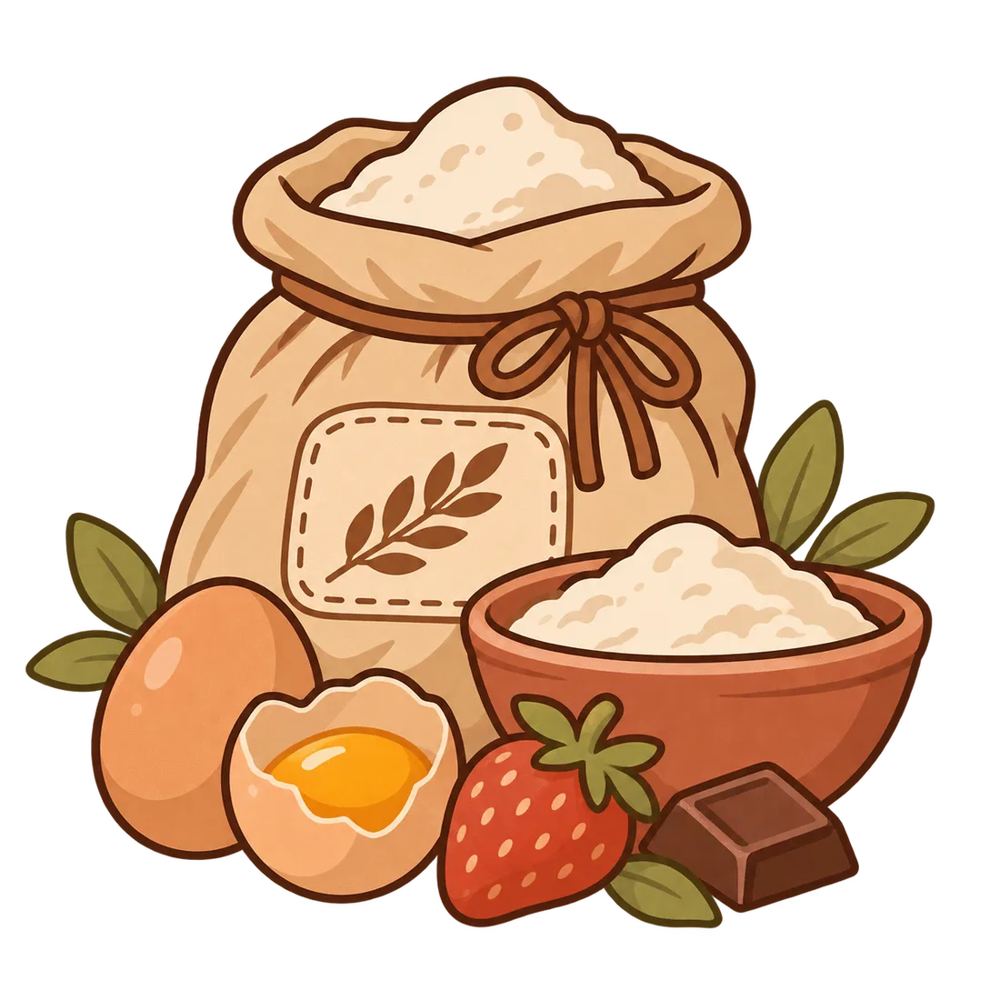

MISIÓN
Elaborar postres artesanales de alta calidad, que transmitan tradición, creatividad y cercanía en cada bocado.


Repostería artesanal de Itá
Preparamos postres caseros con ingredientes seleccionados y mucho cariño. Elegí algo rico para compartir un momento especial.
Conocé nuestra historiaTodo comienza con un poquito de amor

Dulce Esencia Itá nace del cariño por la repostería casera y las tradiciones familiares que nos unen. Nuestro nombre representa nuestras raíces paraguayas y la dedicación que ponemos en cada detalle.
Elaborar postres artesanales de alta calidad, que transmitan tradición, creatividad y cercanía en cada bocado.
Ser una marca reconocida por su cercanía, autenticidad y calidad artesanal.

Bizcocho húmedo de chocolate con una generosa cobertura. Ideal para acompañar una merienda.

Postre cremoso con una base crocante de galletitas y una cubierta dulce de frutillas.

Elegimos con cuidado lo que forma parte de cada creación.
El sabor casero comienza con tiempo y dedicación.
Pequeños postres para grandes momentos.
Somos un emprendimiento de repostería artesanal de Itá.
¡Será un gusto endulzar tus momentos!
Itá, Paraguay
.png)
Horario
a confirmar
.png)
Número
a confirmar
.png)
Cuenta
a confirmar
Los datos de contacto y atención son referenciales y deben confirmarse antes de publicar.